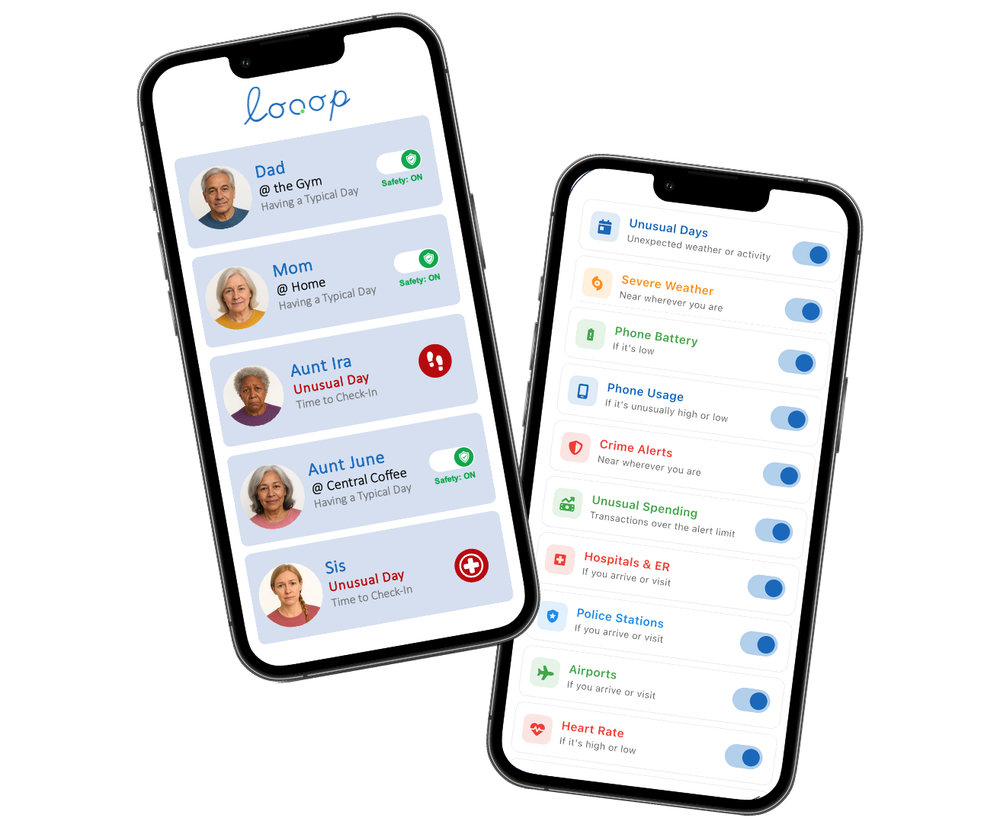

How Looop works
Looop tells you when to check in, so the people you love can live their lives.
Looop is a safety notifications app for families who care from a distance. It stays quiet when all is well. When something seems off, you get a gentle heads-up, so you know it might be a good time to reach out.

"Is everyone okay today?"
Alerts that tell you when to check in
A heads-up when it's worth a call. Quiet when it isn't.
What's happening around them
- Nearby crimeA heads-up when crime is reported near a Loved One, in supported cities. You pick the distance: 1, 3, 5 or 10 miles.
- Severe weatherStorms, flood warnings, extreme heat or cold heading their way, in the US and worldwide.
When their day looks different
- Unusual DayA gentle nudge when something is off compared to their own normal routine.
- Unusual activityA nudge when driving, walking or phone use doesn't fit their usual pattern.
- Phone untouched for hoursA heads-up when their phone hasn't been picked up in a long while.
- Low batteryA heads-up before their phone runs out of charge.
- Arrivals that matterKnow when they arrive at a hospital or ER, a police station or an airport.
Optional alerts, if they choose
- Heart rateUnusually high or low heart rate, shared only if they turn on wellness sharing.
- Breathing rateAn unusual breathing rate, also optional.
- Loud placesA heads-up when they're somewhere dangerously loud.
- Unusual spendingUnusually large spending on a linked bank account, with a threshold you set. Bank linking is optional.
You choose exactly which alerts you get about each Loved One, and you can turn alerts off for anyone with one tap. You can also review every alert about a Loved One from the past 24 hours. And no notification? That's good news.
"Who needs a call today?"
See everyone at a glance
One calm screen for everyone you care about.
- Typical or "Need a Look." See who is having a typical day and who might need a look.
- Plain-language summaries. Get a short summary of what's unusual. No charts to decode.
- Their day, in brief. See whether they're driving, walking or staying put, their local time and the time difference, the weather where they are and their phone battery.
- A family map, for when you need it. After a nudge, the map is there to help you decide what to do next.

"Should I call, or just text?"
Check in, in one tap
Reach out from their card, however feels right.
Call, text or FaceTime
Straight from their card. No digging through contacts.
Quick messages
Send a one-tap "Love you!", "Are you ok?" or "Call Me".
Group chat and WhatsApp
Start a group chat with your whole Looop, or message on WhatsApp.
Ring, Alexa or Wyze
Jump straight to your home devices to check in at home.
"Is that storm anywhere near Dad?"
Weather where they are
Their forecast, right on their card.
- Current conditions wherever each Loved One is.
- A five-day forecast with rain chances.
- Active severe weather alerts you can swipe through, with links to learn more.

"Is Mom sleeping okay lately?"
Health and daily routine, if they choose
Wellness sharing is optional, and always their call.
If a Loved One chooses to share, you can see today's steps, walking, driving and resting time; sleep, including deep, REM and light sleep, and naps; heart rate, breathing rate and workouts; and how much they've used their phone.
Every stat is marked Typical or Unusual, based on that person's own patterns. No comparing anyone to anyone else. Works with Apple Health and Apple Watch.
Ready in an emergency
The numbers you need, one tap away.
- Call 911 in one tap.
- Save up to three emergency contacts for each Loved One, and call them in one tap.
Looop helps you know when to check in. It doesn't detect emergencies. If you think someone is in danger, call 911 first.
Easy to set up
No passwords. No homework.
- Sign up with just your phone number.
- Invite Loved Ones straight from your contacts.
- Join a family group with a simple six-character code.
- Send a friendly reminder to anyone who hasn't joined yet.
- Add a photo for each Loved One.
- Guided setup walks you through every step, with built-in troubleshooting.
- Works quietly in the background, so nobody has to open the app or check in.
Your account, your control
Your family's data isn't for sale.
- Looop never sells your data and doesn't work with advertisers.
- Bank linking is optional and secured through Plaid.
- Leave a group, remove a member or start a new group anytime.
- Delete your account and data whenever you choose.
- Email the founder directly with feedback or to request a new alert.
Questions, answered
What does my Loved One share?
What Looop needs to tell whether their day looks typical: things like whether they're driving, walking or staying put, their phone battery, and the weather where they are. Family members in their Looop can also see where they are on the family map. Health details are shared only if they choose. Before you invite anyone, walk through it together so there are no surprises.
Is wellness sharing optional?
Yes. Steps, sleep, heart rate and other health details are shared only if your Loved One turns them on. It's their choice, and they can change their mind.
Does Looop sell my data?
No. Looop never sells your data and doesn't work with advertisers. Families aren't the product.
Does Looop work outside the US?
Severe weather alerts work in the US and worldwide. Crime alerts are available in supported cities.
Will Looop drain my battery?
Looop works quietly in the background, so nobody has to open the app or check in.
How do I invite someone?
Invite Loved Ones straight from your contacts. They can also join your group with a simple six-character code. If someone hasn't joined yet, you can send a friendly reminder.
Does Looop detect emergencies?
No. Looop gives you a heads-up when something seems off, so you know when to check in. If you think someone is in danger, call 911.
Can I delete my data?
Yes. You can leave a group anytime, and delete your account and data whenever you choose.
How do I give feedback or ask for a new alert?
Email the founder directly from the app, or send us a note through our Get in Touch form. We read everything.
Know when to check in.
Quiet when all is well. A heads-up when it's worth a call.